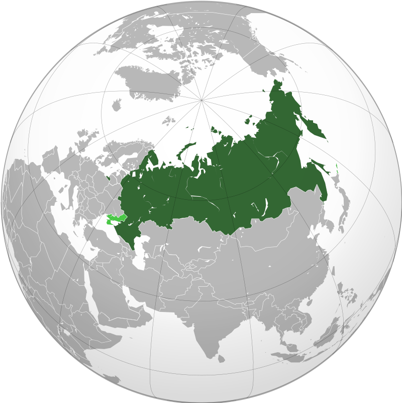
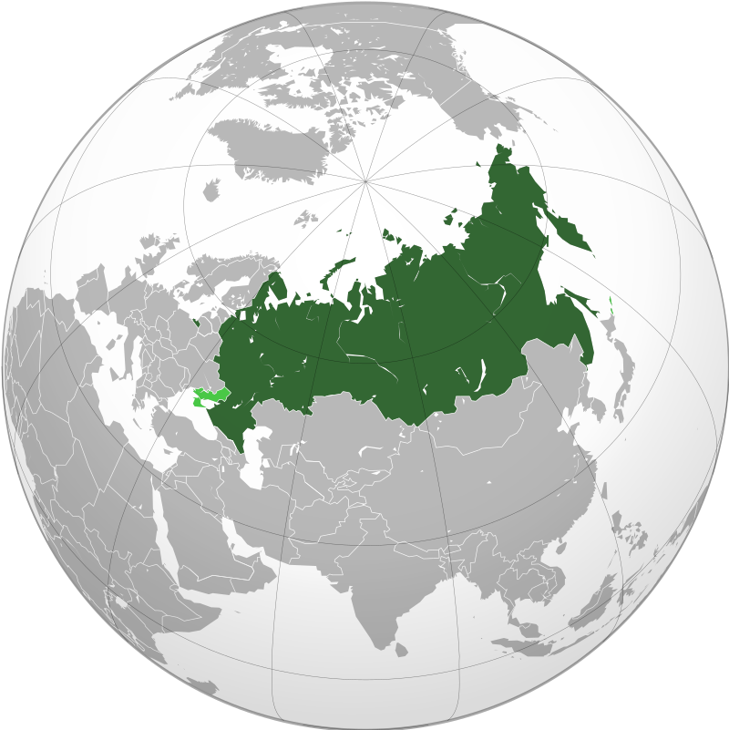

Russia-Russia Fedaration

Capital and largest city:Moscow 55°45′21″N 37°37′02″E
Recognized territory of Russia is shown in dark green; claimed and disputed territory is shown in light green.[a]
Capital and largest city:Moscow 55°45′21″N 37°37′02″E
Recognized territory of Russia is shown in dark green; claimed and disputed territory is shown in light green.[a]
The first human settlement on Russia dates back to the Oldowan period in the early Lower Paleolithic. About 2 million years ago, representatives of Homo erectus migrated to the Taman Peninsula in southern Russia.[37] Flint tools, some 1.5 million years old, have been discovered in the North Caucasus.[38] Radiocarbon dated specimens from Denisova Cave in the Altai Mountains estimate the oldest Denisovan specimen lived 195–122,700 years ago.[39] Fossils of Denny, an archaic human hybrid that was half Neanderthal and half Denisovan, and lived some 90,000 years ago, was also found within the latter cave.[40] Russia was home to some of the last surviving Neanderthals, from about 45,000 years ago, found in Mezmaiskaya cave.[41]
The first trace of an early modern human in Russia dates back to 45,000 years, in Western Siberia.[42] The discovery of high concentration cultural remains of anatomically modern humans, from at least 40,000 years ago, was found at Kostyonki–Borshchyovo,[43] and at Sungir, dating back to 34,600 years ago—both in western Russia.[44] Humans reached Arctic Russia at least 40,000 years ago, in Mamontovaya Kurya.[45] Ancient North Eurasian populations from Siberia genetically similar to Mal'ta–Buret' culture and Afontova Gora were an important genetic contributor to Ancient Native Americans and Eastern Hunter-Gatherers.[46]
The destruction of Kievan Rus' saw the eventual rise of the Grand Duchy of Moscow, initially a part of Vladimir-Suzdal.[71]: 11–20 While still under the domain of the Mongol-Tatars and with their connivance, Moscow began to assert its influence in the region in the early 14th century,[72] gradually becoming the leading force in the "gathering of the Russian lands".[73] When the seat of the Metropolitan of the Russian Orthodox Church moved to Moscow in 1325, its influence increased.[74] Moscow's last rival, the Novgorod Republic, prospered as the chief fur trade centre and the easternmost port of the Hanseatic League.[75]
Led by Prince Dmitry Donskoy of Moscow, the united army of Russian principalities inflicted a milestone defeat on the Mongol-Tatars in the Battle of Kulikovo in 1380.[62] Moscow gradually absorbed its parent duchy and surrounding principalities, including formerly strong rivals such as Tver and Novgorod.[73]
In development of the Third Rome ideas, the grand duke Ivan IV ("the Terrible") was officially crowned the first tsar of Russia in 1547. The tsar promulgated a new code of laws (Sudebnik of 1550), established the first Russian feudal representative body (the Zemsky Sobor), revamped the military, curbed the influence of the clergy, and reorganised local government.[73] During his long reign, Ivan nearly doubled the already large Russian territory by annexing the three Tatar khanates: Kazan and Astrakhan along the Volga,[77] and the Khanate of Sibir in southwestern Siberia. Ultimately, by the end of the 16th century, Russia expanded east of the Ural Mountains.[78] However, the Tsardom was weakened by the long and unsuccessful Livonian War against the coalition of the Kingdom of Poland and the Grand Duchy of Lithuania (later the united Polish–Lithuanian Commonwealth), the Kingdom of Sweden, and Denmark–Norway for access to the Baltic coast and sea trade.[79] In 1572, an invading army of Crimean Tatars were thoroughly defeated in the crucial Battle of Molodi.[80]
Under Peter the Great, Russia was proclaimed an empire in 1721, and established itself as one of the European great powers. Ruling from 1682 to 1725, Peter defeated Sweden in the Great Northern War (1700–1721), securing Russia's access to the sea and sea trade. In 1703, on the Baltic Sea, Peter founded Saint Petersburg as Russia's new capital. Throughout his rule, sweeping reforms were made, which brought significant Western European cultural influences to Russia.[88] He was succeeded by Catherine I (1725–1727), followed by Peter II (1727–1730), and Anna. The reign of Peter I's daughter Elizabeth in 1741–1762 saw Russia's participation in the Seven Years' War (1756–1763). During the conflict, Russian troops overran East Prussia, reaching Berlin.[89] However, upon Elizabeth's death, all these conquests were returned to the Kingdom of Prussia by pro-Prussian Peter III of Russia.[90]